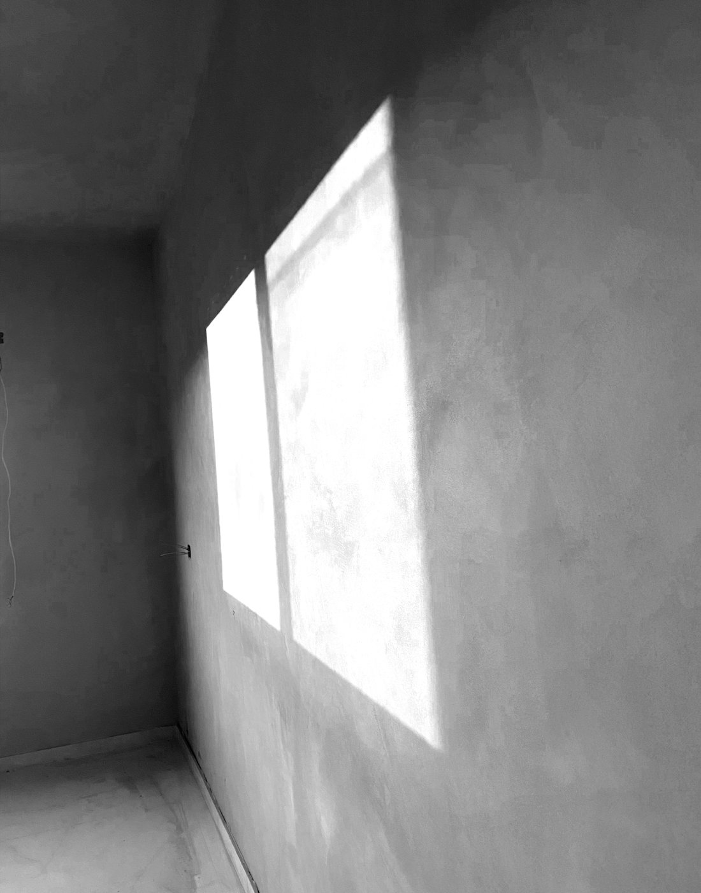
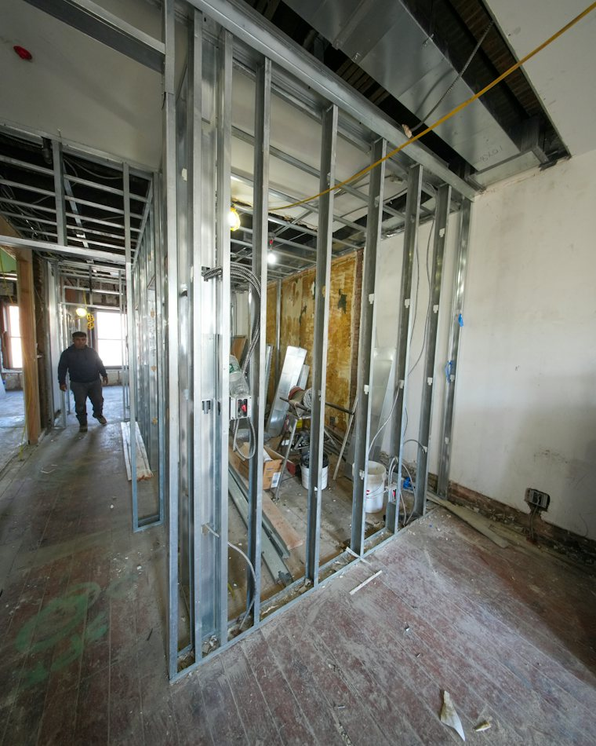

Intonaci, finiture e lavori edili a Nichelino.
Impresa Tallarico S.a.s. di Paolo Tallarico, in Via Sangone 38, alle porte di Torino.

- 5,0su Google, 2 recensioni
- S.a.s.di Paolo Tallarico
- Finiturecompletamento degli edifici
- Nichelinoprovincia di Torino
Lavori
L'ultima mano è quella che si vede.
Siamo un'impresa di finiture: lavoriamo sulle pareti, sui soffitti e sugli interni che restano sotto gli occhi di chi ci abita. Aprite una voce per i dettagli.

Intonaco su murature nuove o rovinate, rasatura a gesso o a calce per avere pareti lisce e pronte da pitturare.
Le lavorazioni che chiudono un cantiere: stuccature, angoli e spigoli, preparazione dei fondi, tinteggiatura.
Pareti divisorie, contropareti e controsoffitti su orditura metallica, per ridisegnare una stanza senza demolire.
Appartamenti e case da rinnovare: opere murarie, tracce per gli impianti e poi tutte le finiture, con un solo referente.
Tramezzi, aperture, ripristini e piccoli lavori edili, in casa o in condominio.
Una parete, quattro passaggi
Dal mattone alla stanza finita.
Scorrete: ogni passata copre quella di prima, come in cantiere.
- 01Muraturail mattone, com'è
- 02Intonacoil fondo che raddrizza
- 03Rasaturala superficie liscia
- 04Stanza finitapronta da abitare
L'impresa
Un nome sul campanello di Via Sangone.
Impresa Tallarico è una società in accomandita semplice guidata da Paolo Tallarico, con sede in Via Sangone 38 a Nichelino. Il registro delle imprese la iscrive tra i lavori di completamento e finitura degli edifici: il mestiere di chi entra quando la struttura c'è già e la deve rendere abitabile.
- Forma
- S.a.s., socio accomandatario Paolo Tallarico
- Attività
- Completamento e finitura degli edifici
- 5,0 su 5, 2 recensioni
Come si lavora
Quattro passi, nessuna sorpresa.
- 1
Telefonata
Ci dite cosa c'è da fare: una stanza, un alloggio, una parete rovinata.
- 2
Sopralluogo
Veniamo a vedere i muri e prendiamo le misure.
- 3
Preventivo scritto
Voce per voce, con i materiali e i tempi.
- 4
Lavoro e pulizia
Finiamo, puliamo e vi lasciamo la stanza pronta.
Contatti
Raccontateci la stanza da sistemare.
Il modo più rapido è il telefono dell'ufficio. Oppure scriveteci due righe e vi richiamiamo noi.
- Telefono011 605 2225
- SedeVia Sangone 38, 10042 Nichelino (TO)